Influencia Social y Grupos
Uniformidad y Conformismo
Juan Muñoz
Universitat Autònoma de Barcelona
http:/juan.psicologiasocial.eu

“The opposite of courage in our society is not cowardice, it is… conformity”
Influencia
Proceso a través del cual las personas o los grupos cambian los pensamientos, sentimientos, y conductas de otros.
Stangor (2004, p. 75)
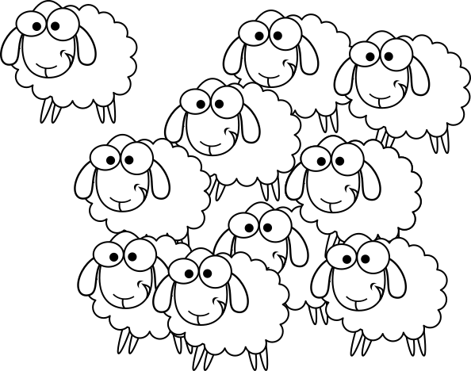
Bases de la influencia social
- Influencia informativa
- Influencia normativa
- Influencia informativa referente
Esquema influencia informativa
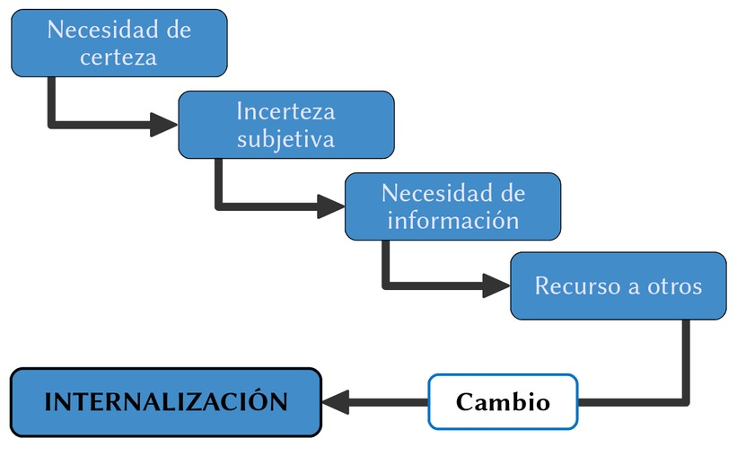
Influencia informativa
Una influencia social informativa puede definirse como una influencia para aceptar la información obtenida de otros como evidencia sobre la realidad.
Deutsch & Gerard (1955, p. 629)
Normalización
Procés de creació de les normes que regulen la conducta, la percepció, el pensament o els desitjos de les persones en una situació concreta.
Feliu (2003, p. 260)
(1906-1988)
El efecto autocinético
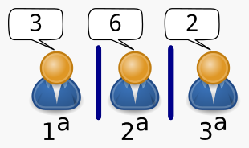
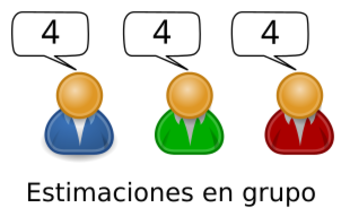
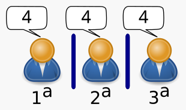
Esquema influencia normativa
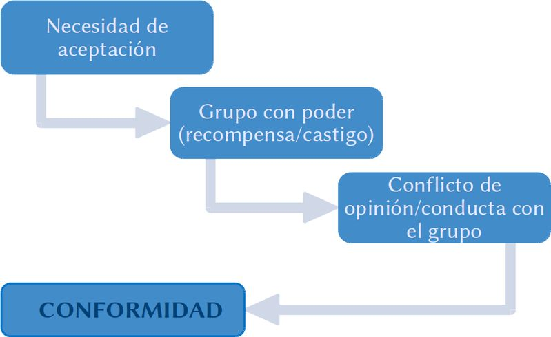
Influencia normativa
[Deutsh y Gerard] Entienden por influencia normativa la que se observa cuando el individuo se conforma con las expectativas positivas del otro (individuo o grupo), a fin de ganar de él una serie de refuerzos y sentimientos positivos, de establecer una solidaridad con él, y en definitiva no verse marginado y ridiculizado por él.
Pérez (1999, p. 261)
El experimento de Asch
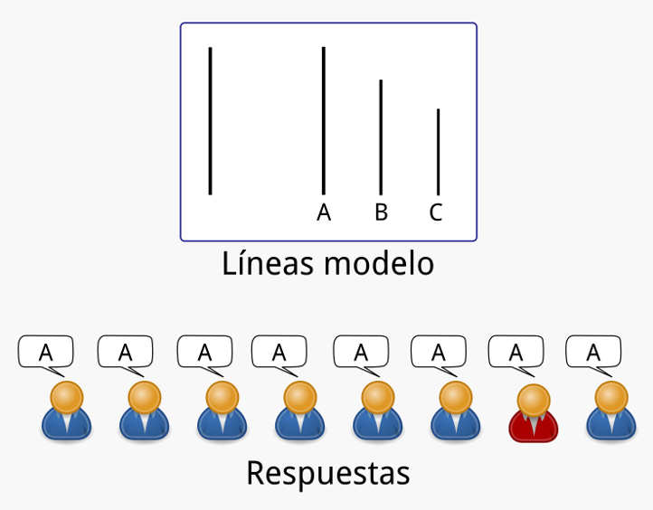
El experimento de Asch
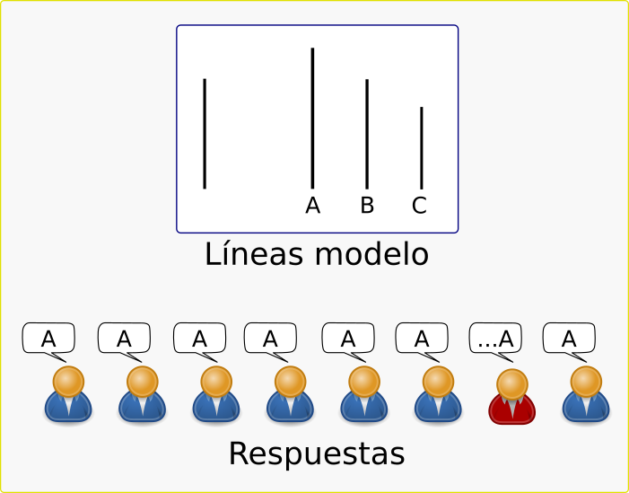
Resultados
- Respuestas incorrectas: 36.8%
- Personas que nunca ceden: 24%
- Personas que siempre ceden: 5%
- Personas que ceden entre 8 y 12 veces: 27%
Tamaño de la mayoría
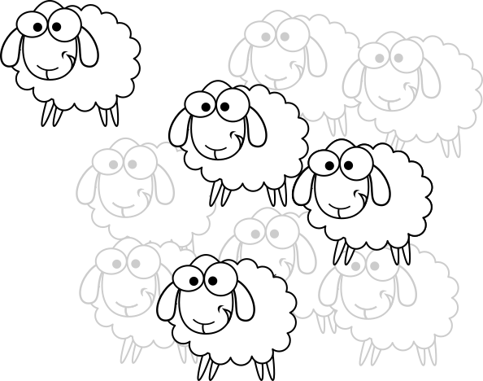
Unanimidad
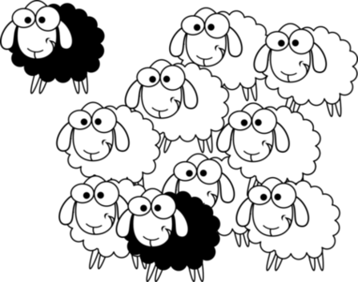
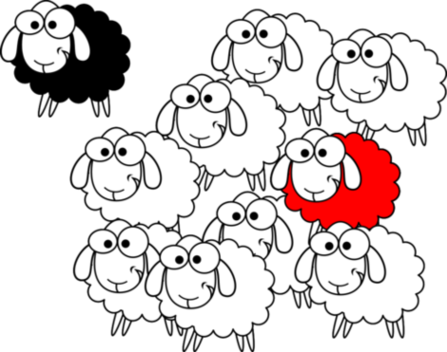
Anonimato
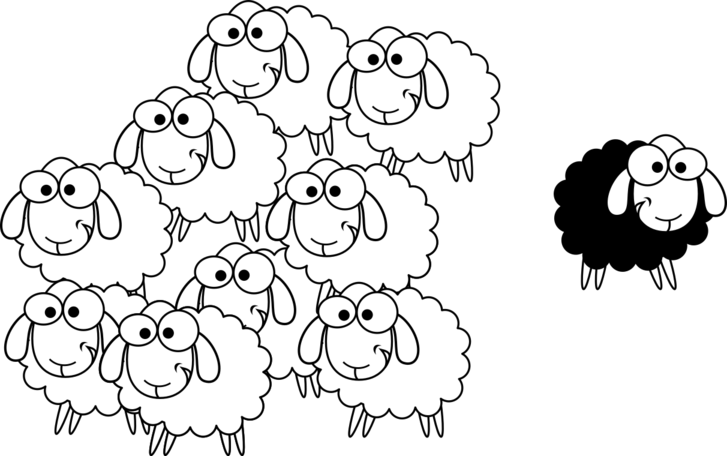
Diferencias mujeres - hombres
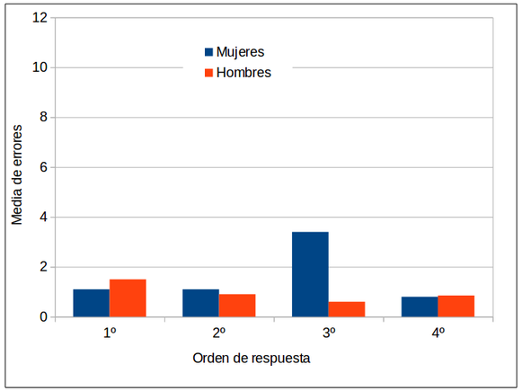
Mori & Arai (2010)
Sexo y edad
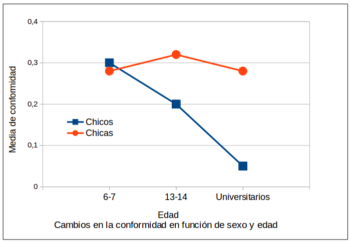
Mori, Ito-Koyama, Arai, & Hanayama (2014)
Dificultad y relevancia de la tarea
Baron, Vandello, & Brunsman (1996)
Baron et al. (1996)
Ignorancia pluralista
en ocasiones, la mayoría de los miembros de un grupo no están de acuerdo con una norma, creencia o modo de actuar del grupo, en su interior o de forma privada, pero cada uno de los sujetos cree –incorrectamente–, que todos o la mayoría de los miembros del grupo sí que están de acuerdo con esa norma, creencia o modo de actuar.
Katz y Allport, 1931
“Miedo” a hablar
Pensamiento grupal

Espiral del silencio
Bandwagon effect
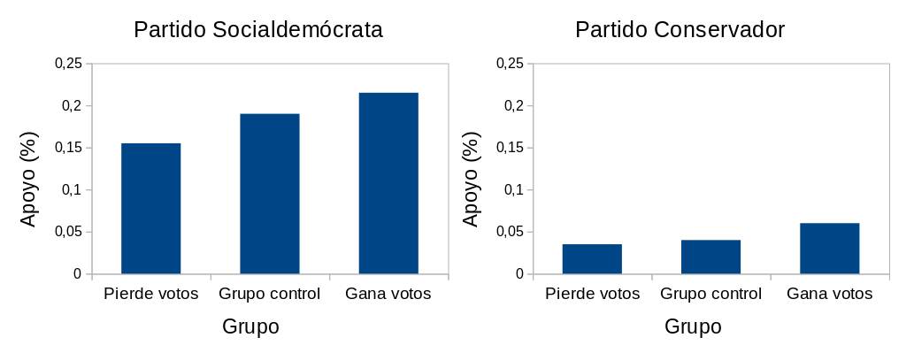
Dahlgaard, Hansen, Hansen, & Larsen (2017)
La importancia de los grupos
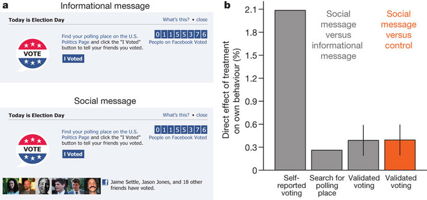
Bond et al. (2012)
Influencia informativa referente
Consideramos que tanto las comparaciones sociales para reducir la incertidumbre como la existencia de una presión normativa para conformarse dependen de percibir que la fuente de influencia pertenece a la propia categoría.
Abrams, Wetherell, Cochrane, Hogg, & Turner (1990, p. 97)
Categorización e influencia
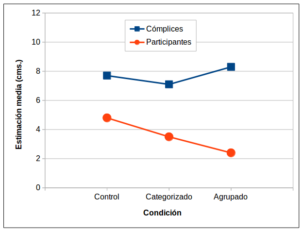
Abrams et al. (1990)
Categorización, anonimato e influencia
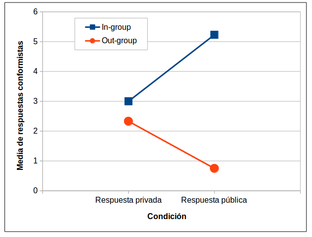
Abrams et al. (1990)
Referencias
Abrams, D., Wetherell, M., Cochrane, S., Hogg, M. A., & Turner, J. C. (1990). Knowing what to think by knowing who you are: Self-categorization and the nature of norm formation, conformity and group polarization. The British Journal of Social Psychology / the British Psychological Society, 29 ( Pt 2), 97–119.
Baron, R. S., Vandello, J. A., & Brunsman, B. (1996). The forgotten variable in conformity research: Impact of task importance on social influence. Journal of Personality and Social Psychology, 71(5), 915–927. http://doi.org/10.1037/0022-3514.71.5.915
Bond, R. M., Fariss, C. J., Jones, J. J., Kramer, A. D. I., Marlow, C., Settle, J. E., & Fowler, J. H. (2012). A 61-million-person experiment in social influence and political mobilization. Nature, 489(7415), 295–298. http://doi.org/10.1038/nature11421
Dahlgaard, J. O., Hansen, J. H., Hansen, K. M., & Larsen, M. V. (2017). How Election Polls Shape Voting Behaviour. Scandinavian Political Studies, 40(3), 330–343. http://doi.org/10.1111/1467-9477.12094
Deutsch, M., & Gerard, H. B. (1955). A study of normative and informational social influences upon individual judgment. The Journal of Abnormal and Social Psychology, 51(3), 629–636. http://doi.org/10.1037/h0046408
Feliu, J. (2003). Influència, conformitat i obediència. Les paradoxes de l’individu social. In T. Ibáñez Gracia (Ed.), Introducció a la psicologia social (1a. ed. en llengua catalana., pp. 251–366). Barcelona: UOC.
Mori, K., & Arai, M. (2010). No need to fake it: Reproduction of the Asch experiment without confederates. International Journal of Psychology, 45(5), 390–397. http://doi.org/10.1080/00207591003774485
Mori, K., Ito-Koyama, A., Arai, M., & Hanayama, A. (2014). Boys, Be Independent! Conformity Development of Japanese Children in the Asch Experiment without Using Confederates. Psychology, 2014. http://doi.org/10.4236/psych.2014.57073
Pérez, J. A. (1999). La influencia mayoritaria. In J. F. Morales (Ed.), Psicología social (pp. 251–265). Madrid: McGraw-Hill.
Stangor, C. (2004). Social groups in action and interaction. New York: Psychology Press.